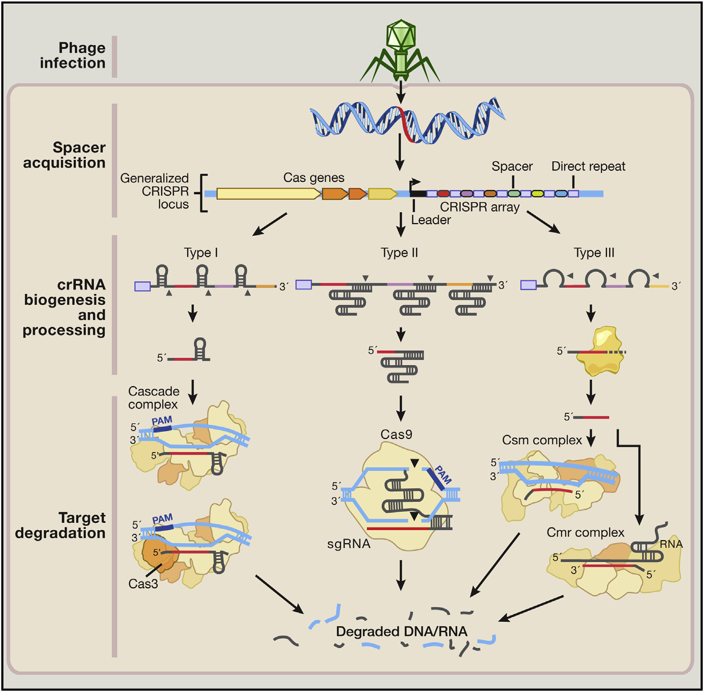
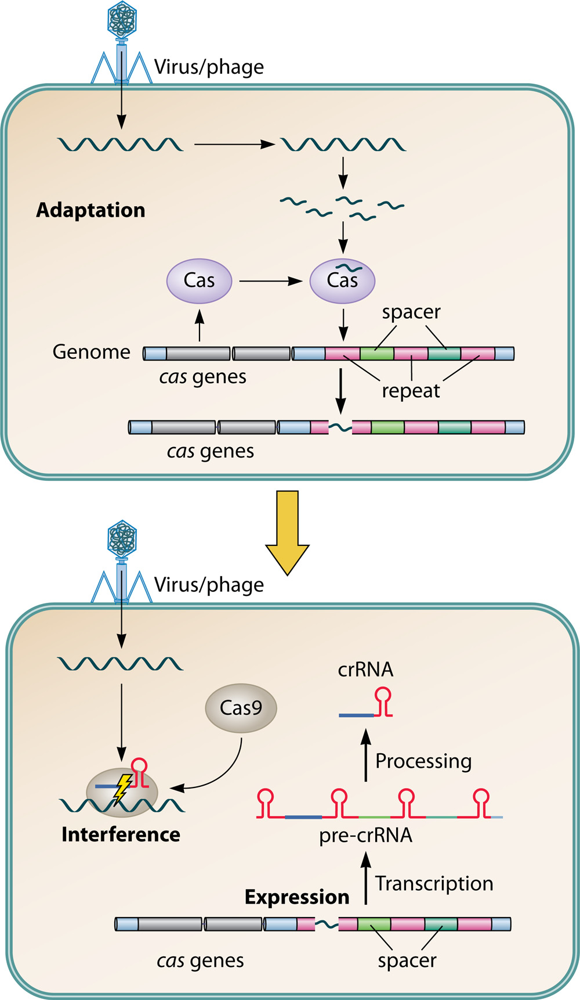

精确和有效的基因组定位技术是十分有价值的。而现有的技术如Meganuclease、ZF和TALE无法满足需要，新的技术有发展意义。
精确和有效的基因组定位技术是十分有价值的。而现有的技术如Meganuclease、ZF和TALE无法满足需要，新的技术有发展意义。
CRISPR位点通常由一组聚集的CRISPR相关基因（Cas）和CRISPR特征序列组成。CRISPR特征序列是一系列重复序列 （正向重复）, 由和外部基因中的序列（protospacers）相对应的可变序列（spacers）间隔。
CRISPR有三种类型。其中，Ⅰ型和Ⅲ型的crRNA和一些蛋白质形成复合体介导CRISPR关联的核糖核酸酶来剪切目的片段，Ⅱ型的tracrRNA与正向重复序列杂交介导Cas9剪切目的片段。
Cas9-crRNA-tracrRNA复合体与含有PAM的外源DNA结合在一起, Cas9在其中结合并开始解旋外源DNA的双链, 以诱导 crRNA和外源DNA的双链形成。Cas9包括REC识别区域和NUC核酸酶功能区域。NUC包含HNH和RuvC核酸酶域以及包含PAM识别区域(PI)的羧基端区域。HNH和RuvC结构域使DNA双螺旋断裂，以便crRNA和DNA双链中的一条链结合。
